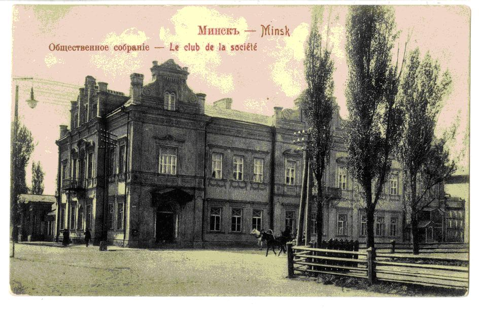
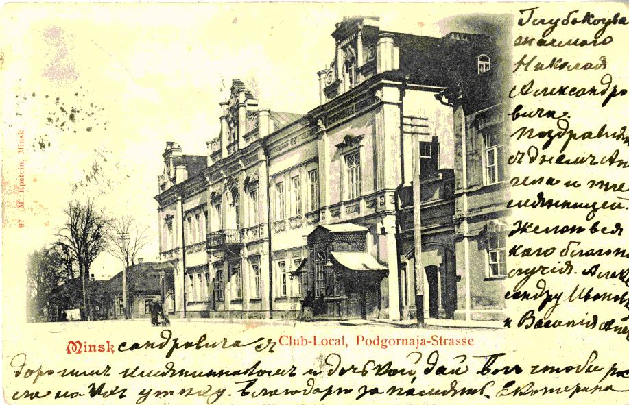
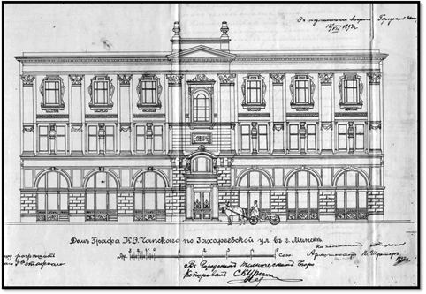
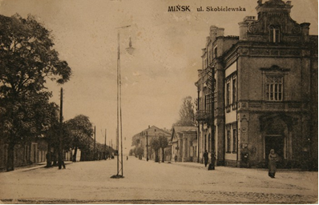

The most famous Palace of Count Karol Czapskiy was at the corner of Krasnoarmeyskaya (formerly Skobelevskaya) and Karl Marx (formerly Podgornaya) streets. This building with Baroque ornament was constracted in 1857 by Minsk historian and collector Mikhail Gausman.
The mayor of Minsk bought this beautiful Palace. It wasn't just a residential building. It housed the public Assembly, which was the body of the provincial nobility, protecting the interests and privileges of hereditary nobles, had the right to choose the provincial head of the nobility, members of the noble Deputy Assembly, assessors of the noble guardianship, honorary guardians of gymnasiums, Pro-gymnasium, etc. Concerts, theatrical performances, city Christmas trees, charity dance evenings for the benefit of poor students of higher educational institutions who received secondary education in Minsk were held in the hall of the Public Assembly. Minsk society of fine arts lovers (1898-1899) started its activity here. Minsk City Debt Society was located in the Palace of Count Karol Jan Czapskiy since 1895. The City Council allocated 50 thousand roubles for its needs. The company provided customers with long-term loans secured by city buildings and land, thus stimulating housing construction.
The Palace was demolished during the construction of the building of the former the Central Committee of the Communist Party.



